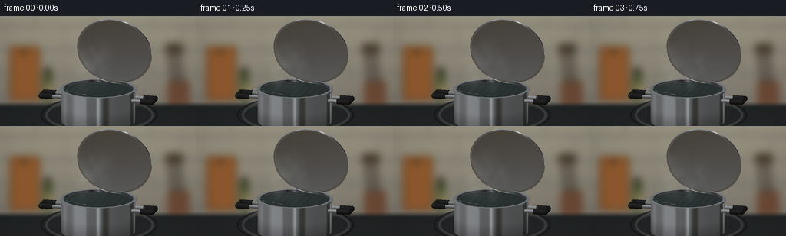
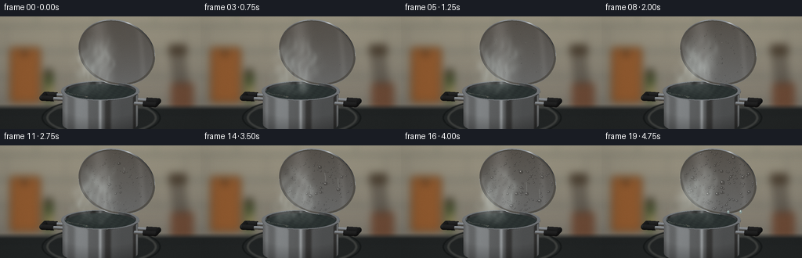
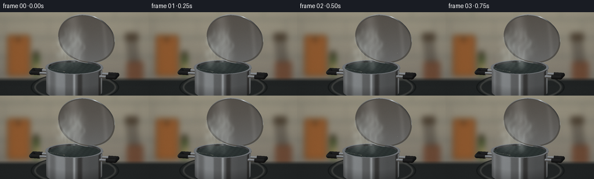
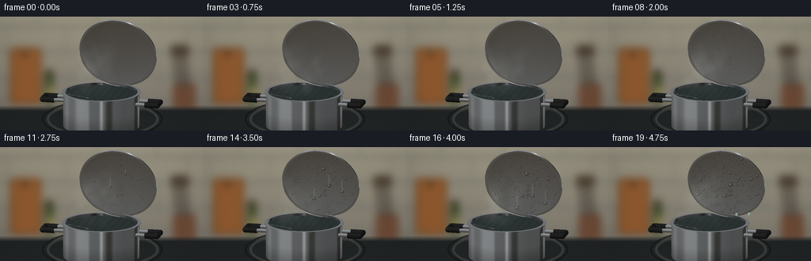
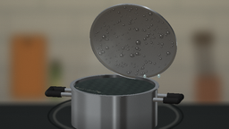

CODING AGENTS AS PIXEL WORLD MODELS
traex/GPT-6.1-Sol · phygen_103
点击播放 · 原生 RGB 像素
逐轮保存的候选
回放视频、检查图与代码变化。
每份候选均可单独播放。实际图片检查记录在下方工具轨迹中。
候选 01播放与检查图
点击播放 · 原生 RGB 像素


展开代码变化
--- 上一保存版本
+++ 本次保存版本
@@ -0,0 +1,305 @@
+from pathlib import Path
+import numpy as np
+from PIL import Image, ImageDraw, ImageFilter
+from artifact_io import save
+
+ROOT=Path(__file__).resolve().parent
+W,H,S=256,144,3
+w,h=W*S,H*S
+rng=np.random.default_rng(103)
+
+def norm(v):
+ v=np.asarray(v,float)
+ return v/np.linalg.norm(v,axis=-1,keepdims=True)
+view=norm([.22,.25,.943]); right=norm(np.cross([0,1,0],view)); up=np.cross(view,right)
+target=np.array([0,1.82,0.]); scale=w/7.6
+xx,yy=np.meshgrid(np.arange(w)+.5,np.arange(h)+.5)
+O=target+((xx-w/2)/scale)[...,None]*right+((h/2-yy)/scale)[...,None]*up+view*12
+D=-view
+zbuf=np.full((h,w),100.); normal=np.zeros((h,w,3)); pos=np.zeros((h,w,3)); material=np.zeros((h,w),int)
+
+def project(p):
+ p=np.asarray(p)-target
+ return np.array([w/2+np.dot(p,right)*scale,h/2-np.dot(p,up)*scale])
+
+def add(t,n,mat,mask=None):
+ good=(t>0)&(t<zbuf)
+ if mask is not None: good &= mask
+ zbuf[good]=t[good]
+ pn=O+t[...,None]*D
+ pos[good]=pn[good]
+ if np.asarray(n).ndim==1: normal[good]=n
+ else: normal[good]=n[good]
+ material[good]=mat
+
+def sphere(c,r,mat):
+ oc=O-np.array(c); b=np.sum(oc*D,axis=-1); q=b*b-np.sum(oc*oc,axis=-1)+r*r
+ t=-b-np.sqrt(np.maximum(q,0)); p=O+t[...,None]*D
+ add(t,(p-c)/r,mat,q>=0)
+
+def cylinder(a,b,r,mat):
+ a=np.array(a); b=np.array(b); axis=norm(b-a); length=np.linalg.norm(b-a)
+ oc=O-a; dv=np.dot(D,axis); cv=np.sum(oc*axis,axis=-1)
+ dp=D-dv*axis; cp=oc-cv[...,None]*axis
+ aa=np.dot(dp,dp); bb=np.sum(cp*dp,axis=-1); cc=np.sum(cp*cp,axis=-1)-r*r
+ dis=bb*bb-aa*cc
+ for sign in [-1,1]:
+ t=(-bb+sign*np.sqrt(np.maximum(dis,0)))/aa
+ along=cv+t*dv; p=O+t[...,None]*D
+ n=(p-a-along[...,None]*axis)/r
+ add(t,n,mat,(dis>=0)&(along>=0)&(along<=length))
+
+def disk(c,n,r,mat,inner=0):
+ c=np.array(c); n=norm(n); t=np.sum((c-O)*n,axis=-1)/np.dot(D,n)
+ p=O+t[...,None]*D; rr=np.sum((p-c)**2,axis=-1)
+ if np.dot(n,D)>0: n=-n
+ add(t,n,mat,(rr<=r*r)&(rr>=inner*inner))
+
+# Defocused domestic kitchen background.
+bg=Image.new('RGB',(w,h),(91,85,73)); dr=ImageDraw.Draw(bg)
+for y in range(h):
+ f=y/h; col=(int(156-37*f),int(150-37*f),int(131-27*f))
+ dr.line((0,y,w,y), fill=col)
+for y in [12,44,76,108]:
+ dr.line((0,y*S,w,y*S),fill=(102,105,98),width=2*S)
+ for x in range(-30+(y//32%2)*38,270,76):
+ dr.line((x*S,(y-32)*S,x*S,y*S),fill=(107,107,96),width=S)
+# softly lit chopping board, spice jars, and utensil silhouettes
+for i in range(18):
+ dr.rounded_rectangle((12*S+i,39*S+i,52*S-i,111*S-i), radius=5*S, fill=(111+i*2,73+i,39+i//2))
+dr.ellipse((28*S,44*S,34*S,50*S),fill=(54,40,25))
+dr.rectangle((56*S,72*S,68*S,112*S),fill=(68,78,43))
+dr.rounded_rectangle((58*S,67*S,66*S,75*S),radius=2*S,fill=(54,46,30))
+dr.rectangle((60*S,89*S,67*S,103*S),fill=(151,138,89))
+dr.rounded_rectangle((218*S,84*S,247*S,120*S),radius=5*S,fill=(108,74,54))
+for x in [224,231,238]:
+ dr.line((x*S,87*S,(x-5)*S,44*S),fill=(56,49,42),width=3*S)
+ dr.ellipse(((x-9)*S,35*S,(x+1)*S,51*S),fill=(75,64,50))
+bg=bg.filter(ImageFilter.GaussianBlur(4.8*S))
+# dark glossy range in the near foreground
+arr=np.asarray(bg).astype(float)
+transition=np.clip((yy/S-112)/7,0,1)
+range_col=np.stack([26+9*(yy/h),29+9*(yy/h),30+8*(yy/h)],axis=-1)
+arr=arr*(1-transition[...,None])+range_col*transition[...,None]
+bg=Image.fromarray(np.uint8(arr)); dr=ImageDraw.Draw(bg)
+dr.ellipse((59*S,107*S,200*S,152*S),outline=(61,63,61),width=3*S)
+dr.ellipse((53*S,105*S,205*S,154*S),outline=(21,24,24),width=2*S)
+bg=bg.filter(ImageFilter.GaussianBlur(.55*S)); background=np.asarray(bg).astype(float)
+
+# Hollow saucepan, rolled lip, dark handles and shallow hot water.
+cylinder([0,-.2,0],[0,1.08,0],1.43,1)
+cylinder([0,.06,0],[0,1.115,0],1.365,2)
+disk([0,1.116,0],[0,1,0],1.48,1,1.36)
+cylinder([0,1.07,0],[0,1.116,0],1.48,1)
+disk([0,1.069,0],[0,1,0],1.48,1,1.425)
+disk([0,1.015,0],[0,1,0],1.365,3)
+for side in [-1,1]:
+ for z in [-.28,.28]:
+ cylinder([side*1.35,.77,z],[side*1.79,.77,z],.07,1)
+ cylinder([side*1.74,.77,z],[side*2.2,.77,z],.105,4)
+ sphere([side*2.2,.77,z],.105,4)
+ cylinder([side*2.2,.77,-.28],[side*2.2,.77,.28],.105,4)
+
+# Curved steel lid tipped against the rear rim, underside facing the steam.
+LC=np.array([.45,2.43,-.83]); N=norm([0,.33,-.944]); U=np.array([1.,0,0]); V=norm([0,.944,.33])
+LR=1.43; depth=.18; CR=(LR*LR+depth*depth)/(2*depth); SC=LC+N*(depth-CR)
+oc=O-SC; b=np.sum(oc*D,axis=-1); dis=b*b-np.sum(oc*oc,axis=-1)+CR*CR
+for sign in [-1,1]:
+ t=-b+sign*np.sqrt(np.maximum(dis,0)); p=O+t[...,None]*D
+ q=np.sum((p-LC)*N,axis=-1)
+ rad=np.sum((p-LC)**2,axis=-1)-q*q
+ # concave inner surface normal points out toward the pot
+ ns=-(p-SC)/CR
+ add(t,ns,5,(dis>=0)&(q>=-.0001)&(q<=depth+.0001)&(rad<=LR*LR))
+disk(LC,N,1.48,6,1.40)
+cylinder(LC-N*.035,LC+N*.04,1.48,6)
+# A sliver of the rear black lid knob visible over the upper edge.
+knob=LC+N*.36
+cylinder(knob-N*.12,knob+N*.1,.22,4)
+sphere(knob+N*.1,.22,4)
+
+# Environment reflected in the steel: broad window, dark cabinet, warm counter.
+def environment(r):
+ ex,ey,ez=r[...,0],r[...,1],r[...,2]
+ base=np.zeros(r.shape)
+ vertical=np.clip(ey*.55+.48,0,1)
+ base[...,0]=36+vertical*92; base[...,1]=40+vertical*93; base[...,2]=42+vertical*96
+ window=np.exp(-((ex+.66)/.27)**8-((ey-.33)/.58)**8)*np.clip((ez+.75)*2,0,1)
+ base+=window[...,None]*np.array([125,131,135])
+ strip=np.exp(-((ex-.22)/.085)**2)*np.exp(-((ey-.25)/.9)**4)
+ base+=strip[...,None]*np.array([90,93,95])
+ dark=np.exp(-((ex-.57)/.14)**4-((ey-.08)/.7)**4)
+ base*=1-.68*dark[...,None]
+ warm=np.clip(-ey,0,1)[...,None]
+ base=base*(1-.33*warm)+np.array([106,78,48])*.33*warm
+ return np.clip(base,0,255)
+
+light=norm([-.65,.8,.72])
+dot=np.sum(normal*view,axis=-1)
+reflection=2*dot[...,None]*normal-view
+env=environment(reflection)
+ndl=np.clip(np.sum(normal*light,axis=-1),0,1)
+base=background.copy()
+metal=(material==1)|(material==2)|(material==5)|(material==6)
+steel=env*.78+(23+28*ndl)[...,None]*np.array([.99,1.0,1.015])
+# subtle concentric machining marks on underside, vertical brushed grain on pan
+lidq=pos-LC; lu=np.sum(lidq*U,axis=-1); lv=np.sum(lidq*V,axis=-1)
+rho=np.sqrt(lu*lu+lv*lv)
+grain=(np.sin(rho*840)+.4*np.sin(rho*1380))*.7
+bodygrain=np.sin(pos[...,1]*870+np.sin(pos[...,0]*60))*.85
+steel+=np.where(material==5,grain,bodygrain)[...,None]
+steel[material==2]*=.67
+steel[material==6]=env[material==6]*.87+32
+base[metal]=steel[metal]
+black=material==4
+base[black]=(11+17*ndl[black,None])+env[black]*.07
+water=material==3
+wav=.5+.5*np.sin(pos[...,0]*23+np.sin(pos[...,2]*19))
+watercol=env*.20+np.stack([22+4*wav,28+5*wav,27+4*wav],axis=-1)
+base[water]=watercol[water]
+# natural ambient shadow at the bottom of the steel pan
+body=material==1
+shadow=np.clip((pos[...,1]+.16)/.6,0,1)
+base[body]*=(.77+.23*shadow[body,None])
+base=np.clip(base,0,255)
+
+# A reproducible set of condensation nuclei, in local coordinates on the lid.
+drops=[]
+for i in range(235):
+ rr=np.sqrt(rng.uniform(.012,.90))*LR
+ aa=rng.uniform(0,2*np.pi)
+ a,b=rr*np.cos(aa),rr*np.sin(aa)
+ start=rng.uniform(.03,.71)
+ rmax=rng.uniform(.012,.043)
+ if i%13==0: rmax=rng.uniform(.046,.072)
+ drops.append((a,b,start,rmax,rng.random()))
+
+def point_on_lid(a,b):
+ q=depth-CR+np.sqrt(CR*CR-a*a-b*b)
+ p=LC+a*U+b*V+q*N
+ nn=-(p-SC)/CR
+ return p,nn
+
+def paint_drop(img,dep,a,b,r,elong=1.):
+ if r<.0028:return
+ surface,nn=point_on_lid(a,b)
+ c=surface+nn*r*.32
+ xy=project(c); bound=int(np.ceil(r*scale*1.25+2))
+ x0=max(0,int(xy[0])-bound); x1=min(w,int(xy[0])+bound+1)
+ y0=max(0,int(xy[1])-bound); y1=min(h,int(xy[1])+bound+1)
+ if x1<=x0 or y1<=y0:return
+ oo=O[y0:y1,x0:x1]-c
+ bb=np.sum(oo*D,axis=-1); ds=bb*bb-np.sum(oo*oo,axis=-1)+r*r
+ tt=-bb-np.sqrt(np.maximum(ds,0))
+ hit=(ds>0)&(tt<dep[y0:y1,x0:x1]+.005)
+ pp=O[y0:y1,x0:x1]+tt[...,None]*D
+ dn=(pp-c)/r
+ nv=np.clip(np.sum(dn*view,axis=-1),0,1)
+ rf=2*nv[...,None]*dn-view
+ refl=environment(rf)
+ # transparent liquid lenses retain the metal beneath, with a dark refractive edge
+ substrate=base[y0:y1,x0:x1]
+ fres=.045+.65*(1-nv)**4
+ lens=substrate*(.60+.34*nv[...,None])
+ color=lens*(1-fres[...,None])+refl*fres[...,None]
+ half=norm(light+view)
+ sp=np.clip(np.sum(dn*half,axis=-1),0,1)**52
+ color+=sp[...,None]*165
+ bottom=np.clip(np.sum(dn*norm([.2,-.7,.5]),axis=-1),0,1)**16
+ color+=bottom[...,None]*21
+ region=img[y0:y1,x0:x1]
+ region[hit]=np.clip(color[hit],0,255)
+ dep[y0:y1,x0:x1][hit]=tt[hit]
+
+# Gaussian puffs with turbulent filament modulation: advect from boiling water to cool lid.
+steamseeds=[]
+for k in range(33):
+ steamseeds.append((rng.random(),rng.uniform(-.9,.35),rng.uniform(.0,.75),rng.uniform(.08,.16),rng.uniform(.75,1.2),rng.uniform(0,6.28)))
+
+def steam_field(t):
+ density=np.zeros((h,w))
+ for phase,x,z,size,speed,ang in steamseeds:
+ life=(phase+t*.40*speed)%1
+ y=1.08+life*1.57
+ # vapour turns inwards as it reaches the underside
+ px=x+.23*life+.13*np.sin(life*7+ang+t*.7)
+ pz=z-.74*life
+ if life>.75: px-=.35*(life-.75)
+ p=np.array([px,y,pz]); xp,yp=project(p)
+ sx=(size+life*.08)*scale; sy=sx*1.8
+ dx=(xx-xp)/sx; dy=(yy-yp)/sy
+ puff=np.exp(-.5*(dx*dx+dy*dy))
+ filament=.54+.23*np.sin(xx*.065+yy*.09+t*2+ang)+.19*np.sin(xx*.12-yy*.066-t*2.8+ang)
+ opacity=.044*np.sin(np.pi*life)**.6
+ pd=12-np.dot(p-target,view)
+ visibility=np.clip((zbuf-pd+.22)/.32,0,1)
+ density+=puff*np.clip(filament,.08,1)*opacity*visibility
+ return 1-np.exp(-density)
+
+frames=[]
+for frame in range(20):
+ t=frame/19
+ img=base.copy(); dep=zbuf.copy()
+ # Fine, cool mist film becomes visible before discrete drops dominate.
+ haze=np.clip((t-.04)*1.8,0,.7)*(np.exp(-((lu+.15)/1.2)**4-((lv+.25)/1.25)**4))
+ film=(material==5)*haze*.095
+ img=img*(1-film[...,None])+np.array([155,164,167])*film[...,None]
+ for i,(a,b,start,rmax,phase) in enumerate(drops):
+ g=np.clip((t-start)/(1-start),0,1)
+ if g<=0: continue
+ r=rmax*g**.58
+ # A few large drops coalesce and crawl down the inclined underside.
+ if i%31==0 and t>.57:
+ b-=.9*((t-.57)/.43)**1.7
+ r*=1.25
+ if a*a+b*b<(LR-.05)**2:
+ paint_drop(img,dep,a,b,r)
+ # prominent, gravity-driven rivulets and beads running to the lower lip
+ for k,(a,b0,begin) in enumerate([(-.34,.12,.38),(.28,.56,.46),(.78,.22,.53)]):
+ if t<begin: continue
+ duration=(t-begin)/(1-begin)
+ b=b0-1.95*duration**1.45
+ edge=-np.sqrt((LR-.025)**2-a*a)
+ if b>edge:
+ r=.025+.046*min(1,duration*2.5)
+ # thin wet path catches a faint glancing reflection
+ for bb in np.arange(b+.055,min(b0,b+.48),.022):
+ surf,nn=point_on_lid(a+.008*np.sin(bb*16),bb)
+ xp,yp=project(surf)
+ x0=int(xp);y0=int(yp)
+ if 1<=x0<w-1 and 1<=y0<h-1:
+ img[y0-1:y0+2,x0-1:x0+2]=img[y0-1:y0+2,x0-1:x0+2]*.87+np.array([180,185,181])*.13
+ paint_drop(img,dep,a,b,r)
+ else:
+ # Detached drop accelerates downwards toward the saucepan.
+ impact=point_on_lid(a,edge)[0]
+ elapsed=(edge-b)*.29
+ falling=impact+np.array([0,-5*elapsed*elapsed,.07*elapsed])
+ if falling[1]>1.08:
+ xp,yp=project(falling)
+ im=Image.fromarray(np.uint8(np.clip(img,0,255))); pd=ImageDraw.Draw(im)
+ pd.ellipse((xp-1.4*S,yp-2*S,xp+1.4*S,yp+2*S),fill=(131,150,148))
+ pd.ellipse((xp-.65*S,yp-1.3*S,xp+.1*S,yp-.35*S),fill=(229,239,233))
+ img=np.asarray(im).astype(float)
+ steam=steam_field(frame/4)
+ img=img*(1-steam[...,None])+np.array([215,224,220])*steam[...,None]
+ # Some boiling glints animate softly in the exposed water.
+ im=Image.fromarray(np.uint8(np.clip(img,0,255)))
+ dr=ImageDraw.Draw(im)
+ for k in range(16):
+ age=(frame*.15+k*.618)%1
+ a=-.80+.43*np.sin(k*9.3); z=.4+.46*np.sin(k*3.1)
+ p=np.array([a,1.018,z]); xp,yp=project(p)
+ ix,iy=int(xp),int(yp)
+ if 0<=ix<w and 0<=iy<h and material[iy,ix]==3:
+ rad=(.6+1.7*age)*S
+ dr.arc((xp-rad,yp-rad*.40,xp+rad,yp+rad*.40),15,155,fill=(85+int(30*(1-age)),101,94),width=1)
+ im=im.resize((W,H),Image.Resampling.LANCZOS)
+ out=np.asarray(im).astype(float)
+ # very restrained sensor texture and lens falloff
+ gy,gx=np.mgrid[0:H,0:W]
+ vignette=1-.12*((gx-W*.53)/(W*.72))**2-.07*((gy-H*.47)/(H*.78))**2
+ out*=vignette[...,None]
+ out+=rng.normal(0,.38,(H,W,1))
+ frames.append(np.uint8(np.clip(out,0,255)))
+save(np.stack(frames),ROOT)
候选 02播放与检查图
点击播放 · 原生 RGB 像素


展开代码变化
--- 上一保存版本
+++ 本次保存版本
@@ -148,6 +148,9 @@
grain=(np.sin(rho*840)+.4*np.sin(rho*1380))*.7
bodygrain=np.sin(pos[...,1]*870+np.sin(pos[...,0]*60))*.85
steel+=np.where(material==5,grain,bodygrain)[...,None]
+# A broad softbox-like window reflection in the concave brushed steel.
+lidlight=13+22*np.exp(-((lu+.65)/.33)**2)+9*np.exp(-((lu-.95)/.12)**2)
+steel[material==5]+=lidlight[material==5,None]
steel[material==2]*=.67
steel[material==6]=env[material==6]*.87+32
base[metal]=steel[metal]
@@ -230,10 +233,26 @@
dx=(xx-xp)/sx; dy=(yy-yp)/sy
puff=np.exp(-.5*(dx*dx+dy*dy))
filament=.54+.23*np.sin(xx*.065+yy*.09+t*2+ang)+.19*np.sin(xx*.12-yy*.066-t*2.8+ang)
- opacity=.044*np.sin(np.pi*life)**.6
+ opacity=.115*np.sin(np.pi*life)**.6
pd=12-np.dot(p-target,view)
visibility=np.clip((zbuf-pd+.22)/.32,0,1)
density+=puff*np.clip(filament,.08,1)*opacity*visibility
+ # Coherent, fine curling vapour threads between the hot pot and the lid.
+ for k in range(5):
+ for s in np.linspace(.04,1,53):
+ px=-.64+k*.24+.16*np.sin(s*9-t*1.7+k*.9)+.07*np.sin(s*19-t*2.2+k)
+ py=1.10+s*2.10
+ pz=.30-s*.69
+ p=np.array([px,py,pz]); xp,yp=project(p)
+ size=(.028+s*.038)*scale
+ x0=max(0,int(xp-size*3));x1=min(w,int(xp+size*3)+1)
+ y0=max(0,int(yp-size*4));y1=min(h,int(yp+size*4)+1)
+ if x0>=x1 or y0>=y1:continue
+ fade=np.sin(np.pi*s)**.8*(.60+.4*np.sin(s*14-t*2+k)**2)
+ pd=12-np.dot(p-target,view)
+ visible=np.clip((zbuf[y0:y1,x0:x1]-pd+.1)/.2,0,1)
+ gaussian=np.exp(-.5*(((xx[y0:y1,x0:x1]-xp)/size)**2+((yy[y0:y1,x0:x1]-yp)/(size*1.7))**2))
+ density[y0:y1,x0:x1]+=gaussian*.032*fade*visible
return 1-np.exp(-density)
frames=[]
可观测工具轨迹
实际执行的命令与返回图片。
命令 1exit 0
/bin/bash -lc 'ls -la && cat prompt.txt && cat GENERATION_RULES.md && cat task_spec.json'
命令 2exit 0
/bin/bash -lc "cat artifact_io.py && python - <<'PY' import importlib.util for m in ['numpy','PIL','scipy']: print(m, bool(importlib.util.find_spec(m))) PY"
命令 3exit 0
/bin/bash -lc "cat > generate.py <<'PY'
from pathlib import Path
import numpy as np
from PIL import Image, ImageDraw, ImageFilter
from artifact_io import save
ROOT=Path(__file__).resolve().parent
W,H,S=256,144,3
w,h=W*S,H*S
rng=np.random.default_rng(103)
def norm(v):
v=np.asarray(v,float)
return v/np.linalg.norm(v,axis=-1,keepdims=True)
view=norm([.22,.25,.943]); right=norm(np.cross([0,1,0],view)); up=np.cross(view,right)
target=np.array([0,1.82,0.]); scale=w/7.6
xx,yy=np.meshgrid(np.arange(w)+.5,np.arange(h)+.5)
O=target+((xx-w/2)/scale)[...,None]*right+((h/2-yy)/scale)[...,None]*up+view*12
D=-view
zbuf=np.full((h,w),100.); normal=np.zeros((h,w,3)); pos=np.zeros((h,w,3)); material=np.zeros((h,w),int)
def project(p):
p=np.asarray(p)-target
return np.array([w/2+np.dot(p,right)*scale,h/2-np.dot(p,up)*scale])
def add(t,n,mat,mask=None):
good=(t>0)&(t<zbuf)
if mask is not None: good &= mask
zbuf[good]=t[good]
pn=O+t[...,None]*D
pos[good]=pn[good]
if np.asarray(n).ndim==1: normal[good]=n
else: normal[good]=n[good]
material[good]=mat
def sphere(c,r,mat):
oc=O-np.array(c); b=np.sum(oc*D,axis=-1); q=b*b-np.sum(oc*oc,axis=-1)+r*r
t=-b-np.sqrt(np.maximum(q,0)); p=O+t[...,None]*D
add(t,(p-c)/r,mat,q>=0)
def cylinder(a,b,r,mat):
a=np.array(a); b=np.array(b); axis=norm(b-a); length=np.linalg.norm(b-a)
oc=O-a; dv=np.dot(D,axis); cv=np.sum(oc*axis,axis=-1)
dp=D-dv*axis; cp=oc-cv[...,None]*axis
aa=np.dot(dp,dp); bb=np.sum(cp*dp,axis=-1); cc=np.sum(cp*cp,axis=-1)-r*r
dis=bb*bb-aa*cc
for sign in [-1,1]:
t=(-bb+sign*np.sqrt(np.maximum(dis,0)))/aa
along=cv+t*dv; p=O+t[...,None]*D
n=(p-a-along[...,None]*axis)/r
add(t,n,mat,(dis>=0)&(along>=0)&(along<=length))
def disk(c,n,r,mat,inner=0):
c=np.array(c); n=norm(n); t=np.sum((c-O)*n,axis=-1)/np.dot(D,n)
p=O+t[...,None]*D; rr=np.sum((p-c)**2,axis=-1)
if np.dot(n,D)>0: n=-n
add(t,n,mat,(rr<=r*r)&(rr>=inner*inner))
# Defocused domestic kitchen background.
bg=Image.new('RGB',(w,h),(91,85,73)); dr=ImageDraw.Draw(bg)
for y in range(h):
f=y/h; col=(int(156-37*f),int(150-37*f),int(131-27*f))
dr.line((0,y,w,y), fill=col)
for y in [12,44,76,108]:
dr.line((0,y*S,w,y*S),fill=(102,105,98),width=2*S)
for x in range(-30+(y//32%2)*38,270,76):
dr.line((x*S,(y-32)*S,x*S,y*S),fill=(107,107,96),width=S)
# softly lit chopping board, spice jars, and utensil silhouettes
for i in range(18):
dr.rounded_rectangle((12*S+i,39*S+i,52*S-i,111*S-i), radius=5*S, fill=(111+i*2,73+i,39+i//2))
dr.ellipse((28*S,44*S,34*S,50*S),fill=(54,40,25))
dr.rectangle((56*S,72*S,68*S,112*S),fill=(68,78,43))
dr.rounded_rectangle((58*S,67*S,66*S,75*S),radius=2*S,fill=(54,46,30))
dr.rectangle((60*S,89*S,67*S,103*S),fill=(151,138,89))
dr.rounded_rectangle((218*S,84*S,247*S,120*S),radius=5*S,fill=(108,74,54))
for x in [224,231,238]:
dr.line((x*S,87*S,(x-5)*S,44*S),fill=(56,49,42),width=3*S)
dr.ellipse(((x-9)*S,35*S,(x+1)*S,51*S),fill=(75,64,50))
bg=bg.filter(ImageFilter.GaussianBlur(4.8*S))
# dark glossy range in the near foreground
arr=np.asarray(bg).astype(float)
transition=np.clip((yy/S-112)/7,0,1)
range_col=np.stack([26+9*(yy/h),29+9*(yy/h),30+8*(yy/h)],axis=-1)
arr=arr*(1-transition[...,None])+range_col*transition[...,None]
bg=Image.fromarray(np.uint8(arr)); dr=ImageDraw.Draw(bg)
dr.ellipse((59*S,107*S,200*S,152*S),outline=(61,63,61),width=3*S)
dr.ellipse((53*S,105*S,205*S,154*S),outline=(21,24,24),width=2*S)
bg=bg.filter(ImageFilter.GaussianBlur(.55*S)); background=np.asarray(bg).astype(float)
# Hollow saucepan, rolled lip, dark handles and shallow hot water.
cylinder([0,-.2,0],[0,1.08,0],1.43,1)
cylinder([0,.06,0],[0,1.115,0],1.365,2)
disk([0,1.116,0],[0,1,0],1.48,1,1.36)
cylinder([0,1.07,0],[0,1.116,0],1.48,1)
disk([0,1.069,0],[0,1,0],1.48,1,1.425)
disk([0,1.015,0],[0,1,0],1.365,3)
for side in [-1,1]:
for z in [-.28,.28]:
cylinder([side*1.35,.77,z],[side*1.79,.77,z],.07,1)
cylinder([side*1.74,.77,z],[side*2.2,.77,z],.105,4)
sphere([side*2.2,.77,z],.105,4)
cylinder([side*2.2,.77,-.28],[side*2.2,.77,.28],.105,4)
# Curved steel lid tipped against the rear rim, underside facing the steam.
LC=np.array([.45,2.43,-.83]); N=norm([0,.33,-.944]); U=np.array([1.,0,0]); V=norm([0,.944,.33])
LR=1.43; depth=.18; CR=(LR*LR+depth*depth)/(2*depth); SC=LC+N*(depth-CR)
oc=O-SC; b=np.sum(oc*D,axis=-1); dis=b*b-np.sum(oc*oc,axis=-1)+CR*CR
for sign in [-1,1]:
t=-b+sign*np.sqrt(np.maximum(dis,0)); p=O+t[...,None]*D
q=np.sum((p-LC)*N,axis=-1)
rad=np.sum((p-LC)**2,axis=-1)-q*q
# concave inner surface normal points out toward the pot
ns=-(p-SC)/CR
add(t,ns,5,(dis>=0)&(q>=-.0001)&(q<=depth+.0001)&(rad<=LR*LR))
disk(LC,N,1.48,6,1.40)
cylinder(LC-N*.035,LC+N*.04,1.48,6)
# A sliver of the rear black lid knob visible over the upper edge.
knob=LC+N*.36
cylinder(knob-N*.12,knob+N*.1,.22,4)
sphere(knob+N*.1,.22,4)
# Environment reflected in the steel: broad window, dark cabinet, warm counter.
def environment(r):
ex,ey,ez=r[...,0],r[...,1],r[...,2]
base=np.zeros(r.shape)
vertical=np.clip(ey*.55+.48,0,1)
base[...,0]=36+vertical*92; base[...,1]=40+vertical*93; base[...,2]=42+vertical*96
window=np.exp(-((ex+.66)/.27)**8-((ey-.33)/.58)**8)*np.clip((ez+.75)*2,0,1)
base+=window[...,None]*np.array([125,131,135])
strip=np.exp(-((ex-.22)/.085)**2)*np.exp(-((ey-.25)/.9)**4)
base+=strip[...,None]*np.array([90,93,95])
dark=np.exp(-((ex-.57)/.14)**4-((ey-.08)/.7)**4)
base*=1-.68*dark[...,None]
warm=np.clip(-ey,0,1)[...,None]
base=base*(1-.33*warm)+np.array([106,78,48])*.33*warm
return np.clip(base,0,255)
light=norm([-.65,.8,.72])
dot=np.sum(normal*view,axis=-1)
reflection=2*dot[...,None]*normal-view
env=environment(reflection)
ndl=np.clip(np.sum(normal*light,axis=-1),0,1)
base=background.copy()
metal=(material==1)|(material==2)|(material==5)|(material==6)
steel=env*.78+(23+28*ndl)[...,None]*np.array([.99,1.0,1.015])
# subtle concentric machining marks on underside, vertical brushed grain on pan
lidq=pos-LC; lu=np.sum(lidq*U,axis=-1); lv=np.sum(lidq*V,axis=-1)
rho=np.sqrt(lu*lu+lv*lv)
grain=(np.sin(rho*840)+.4*np.sin(rho*1380))*.7
bodygrain=np.sin(pos[...,1]*870+np.sin(pos[...,0]*60))*.85
steel+=np.where(material==5,grain,bodygrain)[...,None]
steel[material==2]*=.67
steel[material==6]=env[material==6]*.87+32
base[metal]=steel[metal]
black=material==4
base[black]=(11+17*ndl[black,None])+env[black]*.07
water=material==3
wav=.5+.5*np.sin(pos[...,0]*23+np.sin(pos[...,2]*19))
watercol=env*.20+np.stack([22+4*wav,28+5*wav,27+4*wav],axis=-1)
base[water]=watercol[water]
# natural ambient shadow at the bottom of the steel pan
body=material==1
shadow=np.clip((pos[...,1]+.16)/.6,0,1)
base[body]*=(.77+.23*shadow[body,None])
base=np.clip(base,0,255)
# A reproducible set of condensation nuclei, in local coordinates on the lid.
drops=[]
for i in range(235):
rr=np.sqrt(rng.uniform(.012,.90))*LR
aa=rng.uniform(0,2*np.pi)
a,b=rr*np.cos(aa),rr*np.sin(aa)
start=rng.uniform(.03,.71)
rmax=rng.uniform(.012,.043)
if i%13==0: rmax=rng.uniform(.046,.072)
drops.append((a,b,start,rmax,rng.random()))
def point_on_lid(a,b):
q=depth-CR+np.sqrt(CR*CR-a*a-b*b)
p=LC+a*U+b*V+q*N
nn=-(p-SC)/CR
return p,nn
def paint_drop(img,dep,a,b,r,elong=1.):
if r<.0028:return
surface,nn=point_on_lid(a,b)
c=surface+nn*r*.32
xy=project(c); bound=int(np.ceil(r*scale*1.25+2))
x0=max(0,int(xy[0])-bound); x1=min(w,int(xy[0])+bound+1)
y0=max(0,int(xy[1])-bound); y1=min(h,int(xy[1])+bound+1)
if x1<=x0 or y1<=y0:return
oo=O[y0:y1,x0:x1]-c
bb=np.sum(oo*D,axis=-1); ds=bb*bb-np.sum(oo*oo,axis=-1)+r*r
tt=-bb-np.sqrt(np.maximum(ds,0))
hit=(ds>0)&(tt<dep[y0:y1,x0:x1]+.005)
pp=O[y0:y1,x0:x1]+tt[...,None]*D
dn=(pp-c)/r
nv=np.clip(np.sum(dn*view,axis=-1),0,1)
rf=2*nv[...,None]*dn-view
refl=environment(rf)
# transparent liquid lenses retain the metal beneath, with a dark refractive edge
substrate=base[y0:y1,x0:x1]
fres=.045+.65*(1-nv)**4
lens=substrate*(.60+.34*nv[...,None])
color=lens*(1-fres[...,None])+refl*fres[...,None]
half=norm(light+view)
sp=np.clip(np.sum(dn*half,axis=-1),0,1)**52
color+=sp[...,None]*165
bottom=np.clip(np.sum(dn*norm([.2,-.7,.5]),axis=-1),0,1)**16
color+=bottom[...,None]*21
region=img[y0:y1,x0:x1]
region[hit]=np.clip(color[hit],0,255)
dep[y0:y1,x0:x1][hit]=tt[hit]
# Gaussian puffs with turbulent filament modulation: advect from boiling water to cool lid.
steamseeds=[]
for k in range(33):
steamseeds.append((rng.random(),rng.uniform(-.9,.35),rng.uniform(.0,.75),rng.uniform(.08,.16),rng.uniform(.75,1.2),rng.uniform(0,6.28)))
def steam_field(t):
density=np.zeros((h,w))
for phase,x,z,size,speed,ang in steamseeds:
life=(phase+t*.40*speed)%1
y=1.08+life*1.57
# vapour turns inwards as it reaches the underside
px=x+.23*life+.13*np.sin(life*7+ang+t*.7)
pz=z-.74*life
if life>.75: px-=.35*(life-.75)
p=np.array([px,y,pz]); xp,yp=project(p)
sx=(size+life*.08)*scale; sy=sx*1.8
dx=(xx-xp)/sx; dy=(yy-yp)/sy
puff=np.exp(-.5*(dx*dx+dy*dy))
filament=.54+.23*np.sin(xx*.065+yy*.09+t*2+ang)+.19*np.sin(xx*.12-yy*.066-t*2.8+ang)
opacity=.044*np.sin(np.pi*life)**.6
pd=12-np.dot(p-target,view)
visibility=np.clip((zbuf-pd+.22)/.32,0,1)
density+=puff*np.clip(filament,.08,1)*opacity*visibility
return 1-np.exp(-density)
frames=[]
for frame in range(20):
t=frame/19
img=base.copy(); dep=zbuf.copy()
# Fine, cool mist film becomes visible before discrete drops dominate.
haze=np.clip((t-.04)*1.8,0,.7)*(np.exp(-((lu+.15)/1.2)**4-((lv+.25)/1.25)**4))
film=(material==5)*haze*.095
img=img*(1-film[...,None])+np.array([155,164,167])*film[...,None]
for i,(a,b,start,rmax,phase) in enumerate(drops):
g=np.clip((t-start)/(1-start),0,1)
if g<=0: continue
r=rmax*g**.58
# A few large drops coalesce and crawl down the inclined underside.
if i%31==0 and t>.57:
b-=.9*((t-.57)/.43)**1.7
r*=1.25
if a*a+b*b<(LR-.05)**2:
paint_drop(img,dep,a,b,r)
# prominent, gravity-driven rivulets and beads running to the lower lip
for k,(a,b0,begin) in enumerate([(-.34,.12,.38),(.28,.56,.46),(.78,.22,.53)]):
if t<begin: continue
duration=(t-begin)/(1-begin)
b=b0-1.95*duration**1.45
edge=-np.sqrt((LR-.025)**2-a*a)
if b>edge:
r=.025+.046*min(1,duration*2.5)
# thin wet path catches a faint glancing reflection
for bb in np.arange(b+.055,min(b0,b+.48),.022):
surf,nn=point_on_lid(a+.008*np.sin(bb*16),bb)
xp,yp=project(surf)
x0=int(xp);y0=int(yp)
if 1<=x0<w-1 and 1<=y0<h-1:
img[y0-1:y0+2,x0-1:x0+2]=img[y0-1:y0+2,x0-1:x0+2]*.87+np.array([180,185,181])*.13
paint_drop(img,dep,a,b,r)
else:
# Detached drop accelerates downwards toward the saucepan.
impact=point_on_lid(a,edge)[0]
elapsed=(edge-b)*.29
falling=impact+np.array([0,-5*elapsed*elapsed,.07*elapsed])
if falling[1]>1.08:
xp,yp=project(falling)
im=Image.fromarray(np.uint8(np.clip(img,0,255))); pd=ImageDraw.Draw(im)
pd.ellipse((xp-1.4*S,yp-2*S,xp+1.4*S,yp+2*S),fill=(131,150,148))
pd.ellipse((xp-.65*S,yp-1.3*S,xp+.1*S,yp-.35*S),fill=(229,239,233))
img=np.asarray(im).astype(float)
steam=steam_field(frame/4)
img=img*(1-steam[...,None])+np.array([215,224,220])*steam[...,None]
# Some boiling glints animate softly in the exposed water.
im=Image.fromarray(np.uint8(np.clip(img,0,255)))
dr=ImageDraw.Draw(im)
for k in range(16):
age=(frame*.15+k*.618)%1
a=-.80+.43*np.sin(k*9.3); z=.4+.46*np.sin(k*3.1)
p=np.array([a,1.018,z]); xp,yp=project(p)
ix,iy=int(xp),int(yp)
if 0<=ix<w and 0<=iy<h and material[iy,ix]==3:
rad=(.6+1.7*age)*S
dr.arc((xp-rad,yp-rad*.40,xp+rad,yp+rad*.40),15,155,fill=(85+int(30*(1-age)),101,94),width=1)
im=im.resize((W,H),Image.Resampling.LANCZOS)
out=np.asarray(im).astype(float)
# very restrained sensor texture and lens falloff
gy,gx=np.mgrid[0:H,0:W]
vignette=1-.12*((gx-W*.53)/(W*.72))**2-.07*((gy-H*.47)/(H*.78))**2
out*=vignette[...,None]
out+=rng.normal(0,.38,(H,W,1))
frames.append(np.uint8(np.clip(out,0,255)))
save(np.stack(frames),ROOT)
PY
python generate.py"命令 4exit 0
/bin/bash -lc "python - <<'PY'
p='generate.py'
s=open(p).read().replace('steel[material==2]*=.67','''# A broad softbox-like window reflection in the concave brushed steel.
lidlight=13+22*np.exp(-((lu+.65)/.33)**2)+9*np.exp(-((lu-.95)/.12)**2)
steel[material==5]+=lidlight[material==5,None]
steel[material==2]*=.67''').replace('opacity=.044*np.sin(np.pi*life)**.6','opacity=.115*np.sin(np.pi*life)**.6')
s=s.replace(' return 1-np.exp(-density)',''' # Coherent, fine curling vapour threads between the hot pot and the lid.
for k in range(5):
for s in np.linspace(.04,1,53):
px=-.64+k*.24+.16*np.sin(s*9-t*1.7+k*.9)+.07*np.sin(s*19-t*2.2+k)
py=1.10+s*2.10
pz=.30-s*.69
p=np.array([px,py,pz]); xp,yp=project(p)
size=(.028+s*.038)*scale
x0=max(0,int(xp-size*3));x1=min(w,int(xp+size*3)+1)
y0=max(0,int(yp-size*4));y1=min(h,int(yp+size*4)+1)
if x0>=x1 or y0>=y1:continue
fade=np.sin(np.pi*s)**.8*(.60+.4*np.sin(s*14-t*2+k)**2)
pd=12-np.dot(p-target,view)
visible=np.clip((zbuf[y0:y1,x0:x1]-pd+.1)/.2,0,1)
gaussian=np.exp(-.5*(((xx[y0:y1,x0:x1]-xp)/size)**2+((yy[y0:y1,x0:x1]-yp)/(size*1.7))**2))
density[y0:y1,x0:x1]+=gaussian*.032*fade*visible
return 1-np.exp(-density)''')
open(p,'w').write(s)
PY
python generate.py"视觉工具实际返回图片 1

视觉工具实际返回图片 2

视觉工具实际返回图片 3

保存候选 2 份；完成命令 4 次；可验证图片返回 3 张。原始 API 响应与完整日志保留在本地。